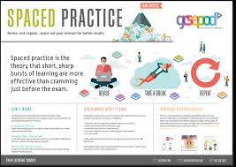
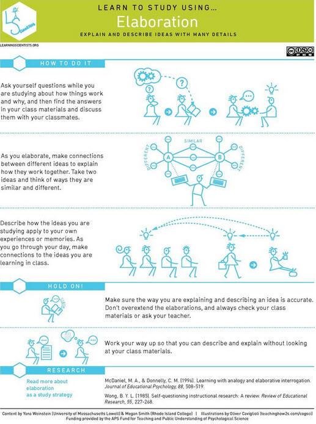
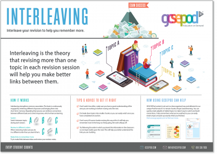
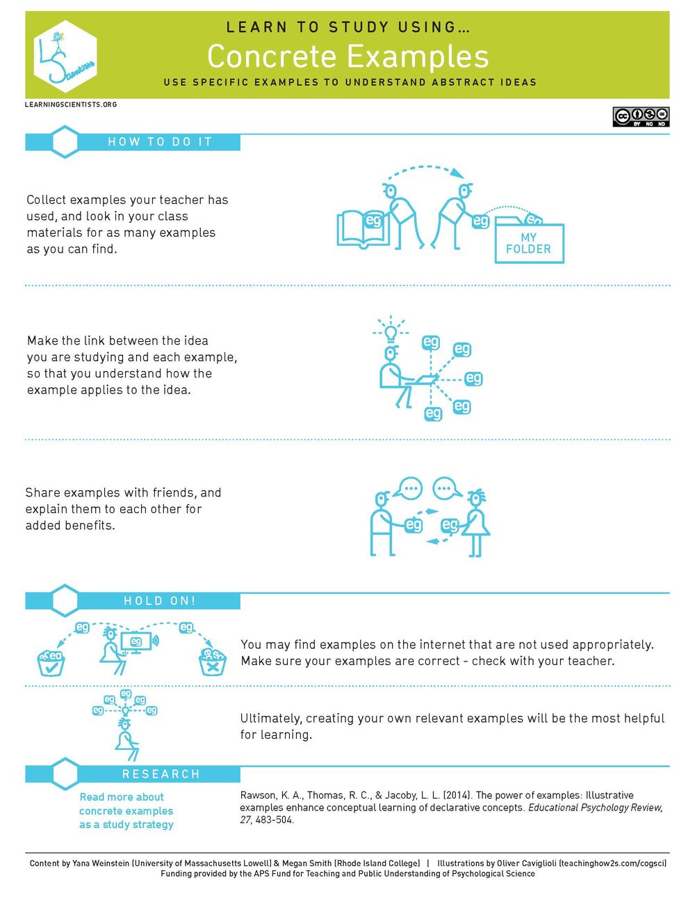
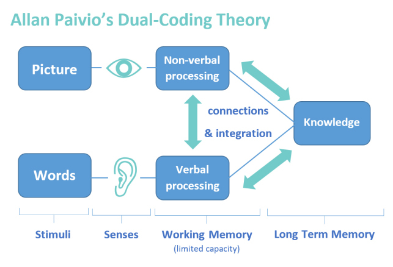

Study smarter, not harder
Study smarter by using methods that have been scientifically shown to help you remember more, for longer and better connect learning across subjects.
This web site is designed to help you understand and begin to use highb quality study skills that will make the studying more effective and help you succeed at school.
Skills
Retrival Practice
The act of trying to remember ideas, through techniques like flash cards to practice tests, actually helps make it easier to remember those ideas and connect them to each other.
.jpeg)
Spaced Practice
This simple method of spacing out your studying makes a big difference in helping to form lasting memories.
Elaboration
Use your own words and add details to the concepts you’re learning to make them your own and make it easier to recall them later.
Interleaving
Instead of studying the same things in the same order over and over, try mixing things up with Interleaving.
Concerte Examples
It’s easier to remember ideas that we can visualize and connect to ideas we already know. Learning and creating specific examples of abstract concepts does just that.
Dual Coding
Combine visuals like pictures, diagrams or your own drawings, with text gives your brain more to latch on to and more pathways to remember.
Credits
The concepts come from learning science. This site was inspired by The Learning Scientists: It was written by Chris Stein and designed by Andrea Sanchez. More information on the About Page
Featured Skill: Retrieval Practice
Retrieval Practice is one of the most effective skills and you can use it for multiple subjects. It’s a great place to start trying out the skills on this site.